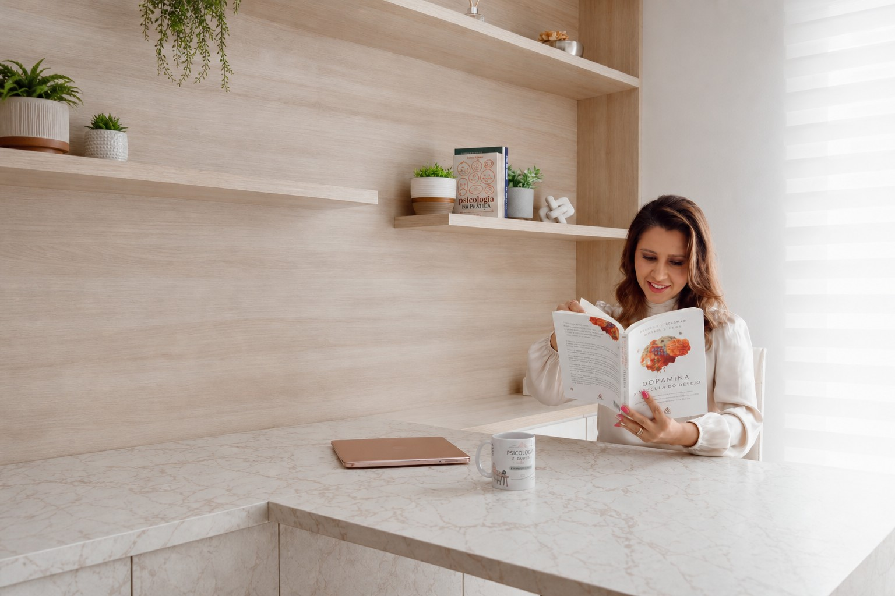

Identidade e autoconhecimento
Quem somos, os papéis que ocupamos, limites, escolhas e os processos de mudança ao longo da vida.
Explorar identidade e autoconhecimento
Blog
Reflexões sobre identidade, relações, comportamento e os diferentes contextos que atravessam a vida.
Algumas perguntas servem para perceber padrões, compreender relações e olhar de outra forma para situações que já fazem parte da nossa vida.
Escolha por onde começar.
Categorias
Quem somos, os papéis que ocupamos, limites, escolhas e os processos de mudança ao longo da vida.
Explorar identidade e autoconhecimentoFamília, relacionamentos, conflitos, limites e as diferentes maneiras como nos relacionamos com os outros e conosco.
Explorar relaçõesDecisões, expectativas, transições e aqueles momentos em que começamos a questionar o lugar que estamos ocupando na própria vida.
Explorar conteúdosComportamento, relações profissionais e os desafios humanos que também aparecem no ambiente de trabalho.
Explorar conteúdosRelações familiares, parentalidade, convivência e os diferentes ambientes que participam do desenvolvimento.
Explorar conteúdosLeitura
Carregando conteúdos…
Conheça o trabalho individual desenvolvido pela Thais.
Conhecer o atendimentoLeve conversas sobre desenvolvimento humano e relações para sua organização.
Palestras para empresasConheça as possibilidades para alunos, famílias e educadores.
Palestras para escolas